Ethernetkabel – afscherming

Bachelor in de elektromechanica – automatisering
Tom Demets | Stefan Lievens
tom.demets@hogent.be | stefan.lievens@hogent.be
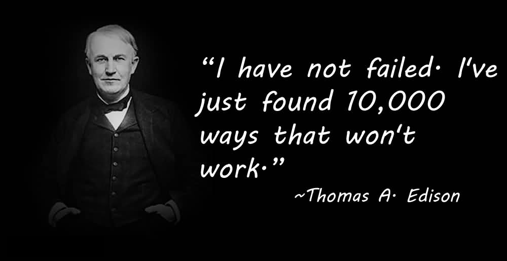
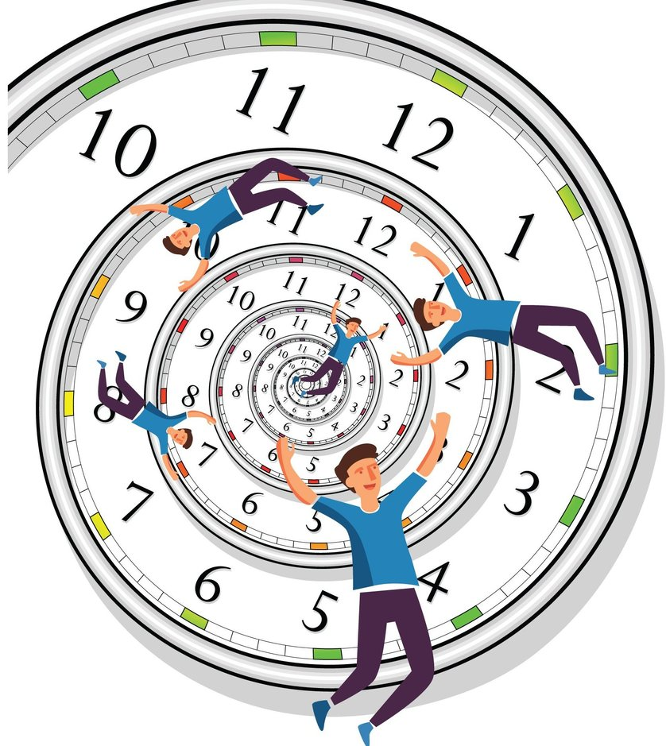
Wat zou er nodig zijn qua hardware, afspraken, … om wereldwijd computers met elkaar te laten communiceren?
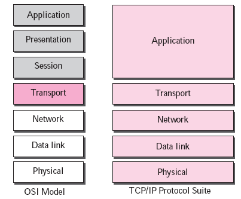
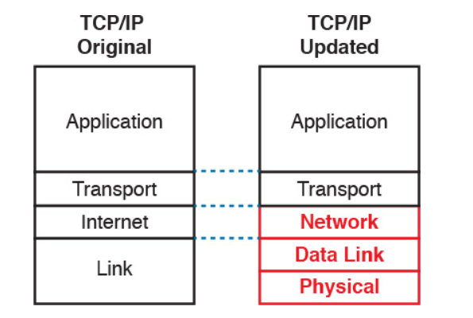
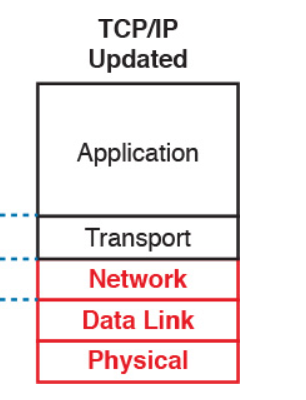
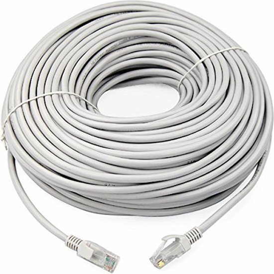
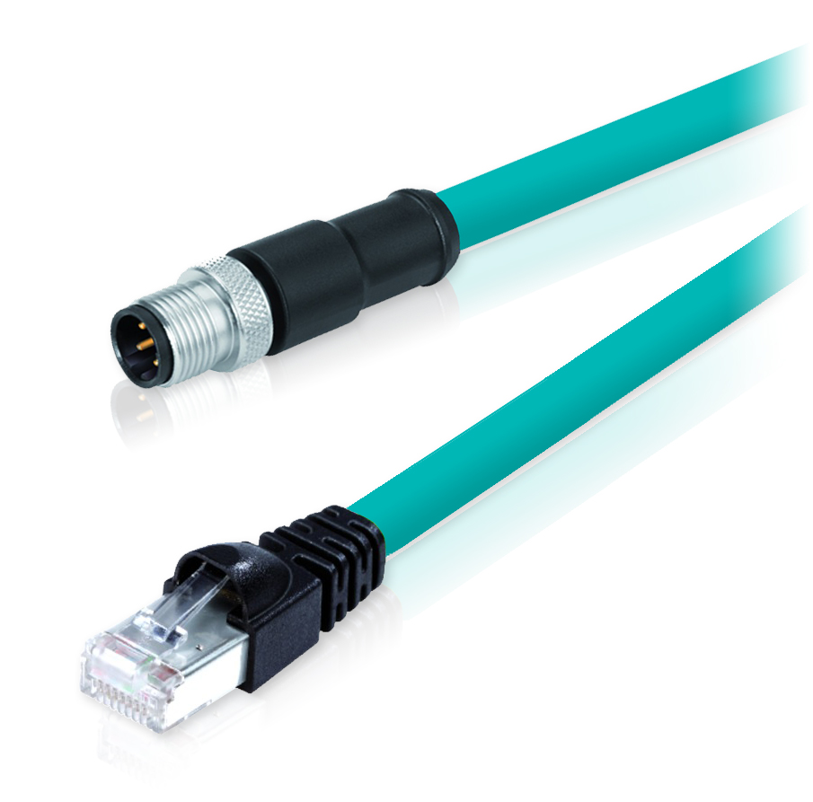
| Categorie | +- 30m | +- 50m | 100m | Connector |
|---|---|---|---|---|
| cat5e | ||||
| cat6 | ||||
| cat6a | ||||
| cat7 | ||||
| cat8 |
Hoe kan je zien als een kabel cat5e, cat6, cat6a, cat7 of cat8 is? / Wat als je verder moet dan 100m? / Wat in de industrie?
Oefening: ga op onderzoek en vul de tabel aan.
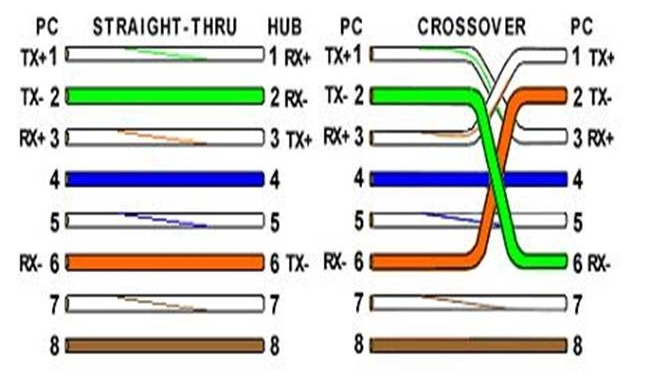
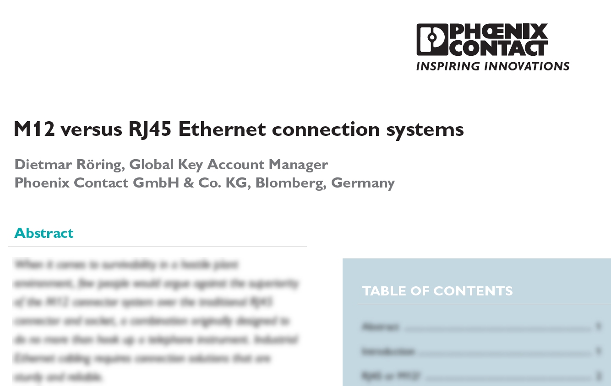
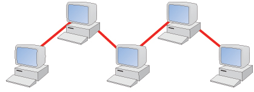


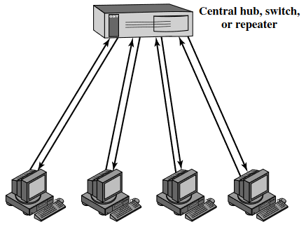